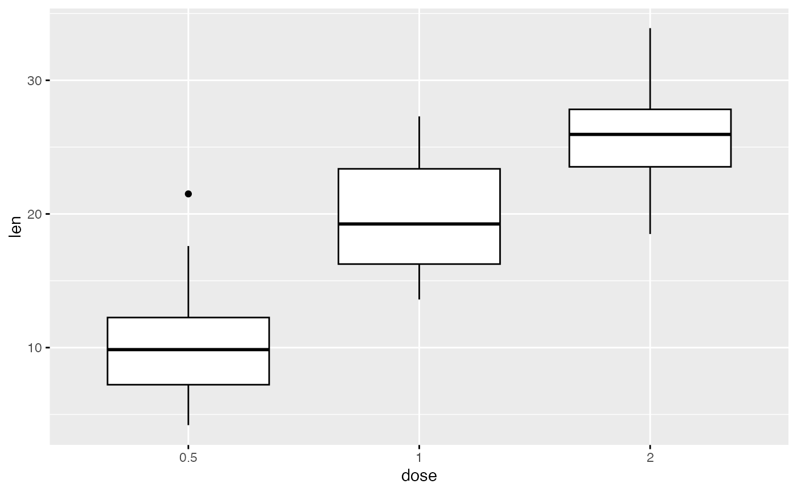

Remove a specific component from a ggplot.
Arguments
- object
character string specifying the plot components. Allowed values include:
"grid"for both x and y grids"x.grid"for x axis grids"y.grid"for y axis grids"axis"for both x and y axes"x.axis"for x axis"y.axis"for y axis"xlab", or "x.title"for x axis label"ylab", or "y.title"for y axis label"xylab", "xy.title" or "axis.title"for both x and y axis labels"x.text"for x axis texts (x axis tick labels)"y.text"for y axis texts (y axis tick labels)"xy.text"or"axis.text"for both x and y axis texts"ticks"for both x and y ticks"x.ticks"for x ticks"y.ticks"for y ticks"legend.title"for the legend title"legend"for the legend
Examples
# Load data
data("ToothGrowth")
# Basic plot
p <- ggboxplot(ToothGrowth, x = "dose", y = "len",
ggtheme = theme_gray())
p

# Remove all grids
p + rremove("grid")
# Remove only x grids
p + rremove("x.grid")